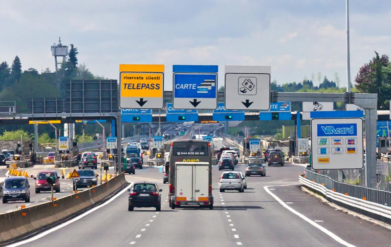

网站导航 MENU
网站首页
路线预定
旅游攻略
旅游常见问题
服务项目
联系我们
关于公司
旅游常见问题
欧盟-申根-欧元
欧洲签证
退税指南
关于国际驾照
关于景点门票
关于住宿
欧洲当地习俗
费用预算
省钱小技巧
关于小费
欧洲高速费
关于宗教
你的位置：
首页
>
旅游常见问题
>
欧洲高速费

收费路顾名思义是从此路经过的费用，即公路税收。也是为了弥补道路的建设与维护经费。通常使用于高速公路、特大桥梁隧道等重要性较高的道路设施。
自古以来，收费公路以某种形式存在，对过往的旅行者，旅行车或骑马征收通行费; 但随着汽车的兴起，收费逐步走向规范化。金额通常因车辆类型而异，货运卡车的收费率通常高于汽车。
除此之外，公共当局还使用收费桥和收费隧道来筹集资金，以偿还建筑物的建造成本。 留出一些通行费来支付未来维护或改善基础设施的费用，或地方政府作为基金，并不不一定用于交通设施。
来欧洲自驾游常见的问题就是如何购买高速费。自驾游过的朋友们肯定都有过不同的经历。对于欧洲的高速费的购买方法，贴法都是很奇葩的。
。欧洲的好多国家尽管是欧盟，但是各国有各国对公路的收费标准，对高速费也是有不同的明文规定。这个高速费不仅对外国人是一种困惑，对于我们长期居住在欧洲的居民也经常搞不懂状况。
拿匈牙利做个例子。12月初我们全家出去旅游。我们开的是九人座的小车。在家门口的加油站买了高速票。我们买了一个十天的高速票。回来后的一个月左右的时候，接到了一个罚款单。看看信才知道是因为高速票而被罚款。心里带着困惑去问了加油站的服务生。正好儿是上次为我服务的服务生。她看了信以后，也十分不解。不知道为什么买了高速票，又接到了罚款单。在没有办法的情况下。我打了电话给高速中心服务部。向他们说明了一切情况，可是办事员也不知道为什么。最后部门经理出来解答：这种九人座的车，既可以买小车票，也可以买大车票。当你买散票的时候，就要按照大车的票来买，买年票的时候就可以按照小车来买。我很不解的跟他说，我的汽车驾照只能开小车儿，不能开大车，这种规定是很不合理的。就连加油站负责卖票的服务生和你们的工作人员都不知道是怎么回事儿，我们客人能怎么办呢？但是规定就是规定。你是没有办法的改变规定的。罚款还要照交。去哪儿讲理呀！
这样想起来，像意大利法国这样有人工收费口的的国家比较省事儿。你不用担心因为高速票买的不对而被罚款。
其实最好的国家还是德国，英国，比利时因为根本就不存在这种烦恼。
捷克必需要买高速票，边境的检查站加油站和邮局都可以买到。
匈牙利高速票的检查是最严格的。只要是上了高速公路的汽车而没有买高速票的，一个都逃不掉的高额罚款。
瑞士高速公路网，无论是一次、一天还是一年，都要购买年票。
意大利最常见的是人工收费。
法国基本都是自助缴费。
一路自驾游的风景和投入到大自然的怀抱的惊喜，让人难忘。当你收到罚单的吃惊也是让人难忘。因为你根本就不知道为什么。
在欧洲自驾游，还有很多需要注意的事项。我们在这儿随时为您提供帮助。
在线留言